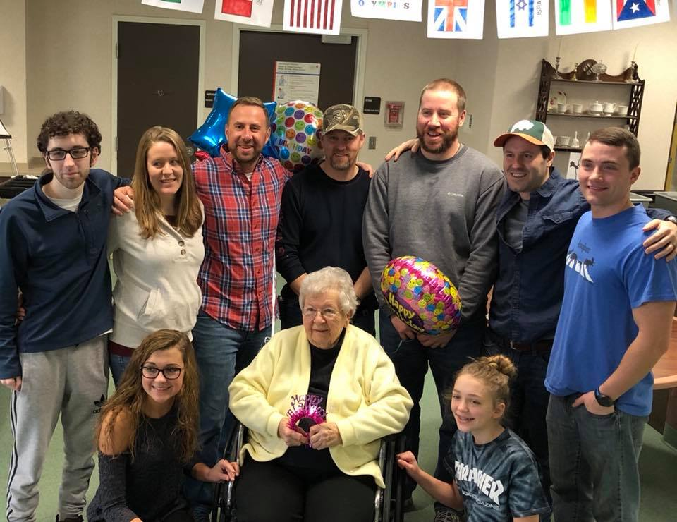

Family
Family is the most important thing to Violet. As the matriarch of the Trost
family, she takes pride in the accomplishments of her children, grandchildren, and great grandchildren.
She will often boast to everyone about their school sports, performances, and career advancements.
Click this card to meet the Trost family.